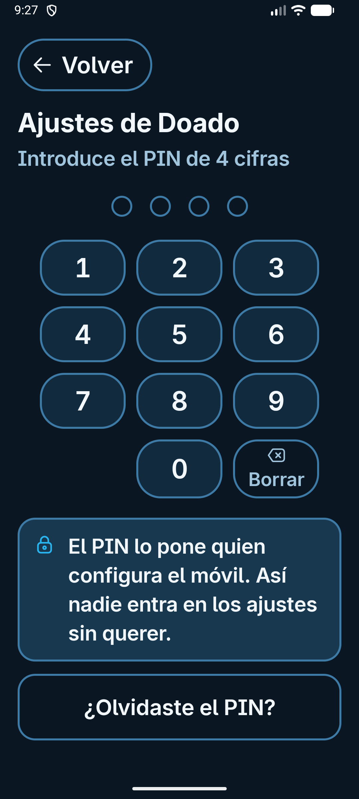
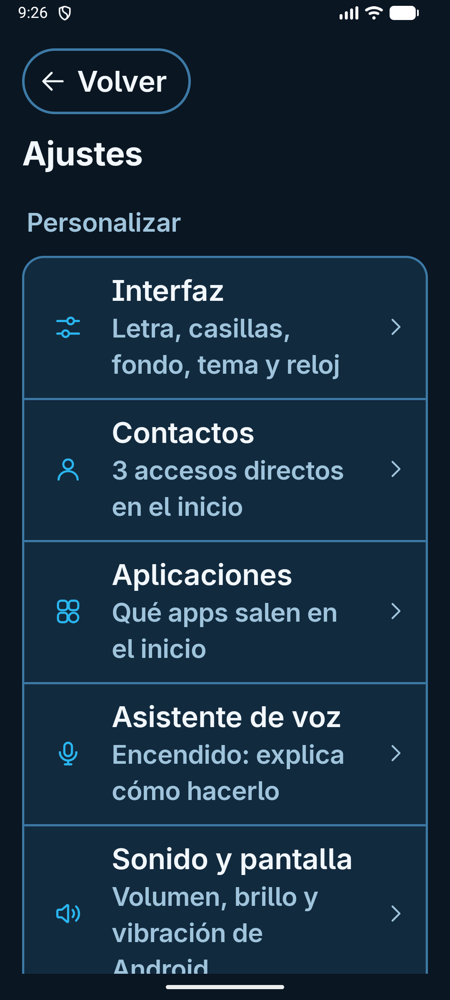
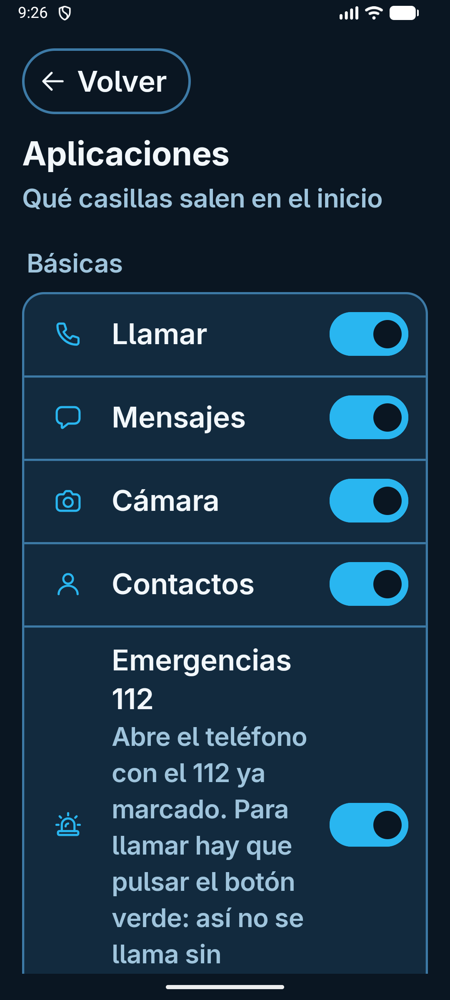
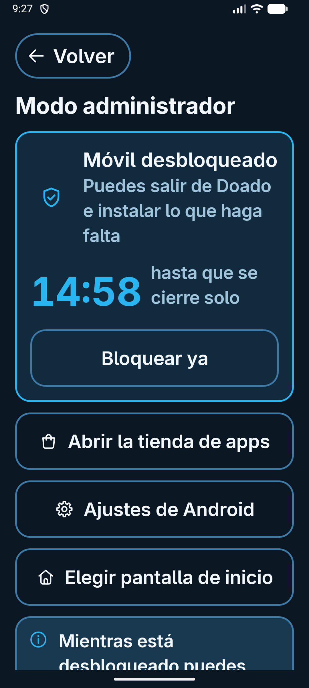

Pantalla de inicio para Android
Que tus mayores vuelvan a usar su móvil.
Doado cambia la pantalla de inicio de cualquier Android por una que se entiende a la primera. Casillas grandes que no se mueven, sus personas a un toque y un asistente de voz que pregunta antes de hacer nada. Tú lo dejas a punto una vez, detrás de un PIN.
- Sin cuentas ni anuncios
- Nada cambia de sitio
- Contraste de 7 a 1
10:30
martes, 21 de octubre
Tus contactos
Pruébalo tú
Cambia lo mismo que cambiarías en sus ajustes, y mira el móvil.
- «Llama a mi hija»
- «Abre el WhatsApp de Luis»
- «¿Cómo hago una foto?»
- «Abre la cámara»
- «No, mejor a Carmen»
- «¿Cómo subo el volumen?»
- «Gracias»
Frases que seguro que has oído
«¿Dónde se ha ido el teléfono? Si estaba aquí.»
«No toco nada, que luego lo estropeo.»
«Me ha salido una cosa y ya no sé volver.»
El problema no son ellos. Es una pantalla llena de iconos diminutos que cambian de sitio sin avisar.
Doado quita lo que sobra y deja lo de cada día: grande, quieto y siempre en el mismo sitio. Para que el móvil vuelva a ser suyo.
Beneficios
Lo que cambia para ella. Y para ti.
Lo que hace falta para llamar, escribir y hacer fotos, a la vista y del tamaño de un dedo de verdad.
Llama sola a quien quiere.
Sus personas están en el inicio, con su nombre. Un toque y llama a María o abre el WhatsApp de Luis.
Encuentra cada cosa donde la dejó.
Las casillas no se mueven. Si una app desaparece, su casilla se queda en su sitio, apagada y con su aviso.
Lee sin esforzarse.
Tres tamaños de letra por encima del de Android, contraste de 7 a 1 y una letra en la que la I y la l no se confunden.
Pide ayuda hablando.
Pulsa el círculo y dice lo que quiere. Doado pregunta antes de hacer nada, o le explica los pasos de uno en uno.
Tiene el 112 a un toque.
Si la enciendes, la casilla «Emergencias 112» abre el teléfono con el número ya puesto. La llamada la hace ella con el botón verde de llamar: así no se llama sin querer.
Y tú, sin sustos.
Los ajustes van detrás de tu PIN, en un botón pequeño de la esquina. Lo que ella no tiene que tocar, ni lo ve.
Qué trae Doado
Tres piezas que trabajan juntas.
Un inicio para ella, un asistente que le hace caso y unos ajustes que solo ves tú.
-
El inicio
La pantalla que ve cada día: la hora, sus casillas y sus personas, en grande y siempre en el mismo sitio.
- Una, dos o tres casillas por fila
- Sus contactos, debajo de las apps o en otra pantalla
- Emergencias 112, si la enciendes
- Tema claro u oscuro y foto de fondo
-
El asistente de voz En pruebas
Un círculo grande abajo, en el centro. Lo pulsa, pide lo que quiere y Doado lo hace tras un «Sí» o le explica cómo.
- Llama o abre el WhatsApp de sus contactos
- Abre sus casillas
- Explica los pasos de uno en uno
- Nunca actúa sin un «Sí»
-
Los ajustes del familiar
Detrás de un PIN de cuatro cifras. Desde ahí lo dejas a su medida, y ella no se encuentra un ajuste por accidente.
- Sus casillas y sus personas
- Letra, casillas por fila y tema
- Modo administrador de quince minutos
- Pregunta para recuperar el PIN
Asistente de voz
En pruebasLo pide hablando. Doado pregunta antes de hacerlo.
Un círculo grande abajo en el centro. Lo pulsa, habla como habla siempre, y Doado llama, abre WhatsApp o le explica paso a paso cómo hacer algo.
-
Nunca actúa sin un «Sí».Pulsado o dicho. Y ese «Sí» lo reconoce el propio móvil, no la inteligencia artificial.
-
Espera sin prisa.Aguanta las pausas largas y tiene un botón de «Ya he terminado». Lo que dice en voz alta, también lo escribe.
-
Sus números no salen del móvil.Al servicio de voz le llegan la voz de la orden y los nombres. Nunca un número de teléfono.
- Tu madre
Llama a María.
- Doado
¿Llamo a María?
Con dos botones: Sí y No. - Tu madre
Sí.
- Doado
Llamando a María.
Modo «Lo hace»: pregunta siempre antes y espera un «Sí», pulsado o dicho.
Para el familiar
Tú lo configuras una vez. Ellos solo tienen que usarlo.
Los ajustes viven detrás de un PIN de cuatro cifras. Desde ahí eliges sus apps, sus personas, la letra y cómo le ayuda el asistente.




Sus personas
Las eliges del listín, una a una, y a cada una le pones botón de llamar, de WhatsApp o los dos.
Sus aplicaciones
Enciendes las básicas y subes al inicio cualquier otra app que ya use. Funcionan sea cual sea la marca del móvil.
Su letra y su tema
Tres tamaños de letra, de una a tres casillas por fila, claro u oscuro y, si quieres, una foto de fondo.
Su asistente
Lo enciendes y eliges si llama por su cuenta tras un «Sí» o si le explica los pasos. De fábrica, explica.
Su PIN
Cuatro cifras guardadas de forma segura, nunca en claro, y una pregunta por si un día se olvidan.
Avisos claros
Si Doado aún no es la pantalla de inicio, te lo dice arriba con un botón para ponerla.
La norma que no se salta
Aquí la accesibilidad manda sobre la estética. Siempre.
No es una capa que se añade al final. Cada pantalla de Doado se mide antes de darse por buena.
7 a 1
El contraste que buscamos en textos y bordes. El mínimo habitual es 4,5:1.
168 dp
El alto mínimo de una casilla del inicio. Android se conforma con 48.
18 sp
El texto más pequeño de toda la app. Nada por debajo.
0
Colores que dependan del fondo de pantalla. Así el contraste no se rompe nunca.
Separa por bordes, no por sombras, porque una sombra suave desaparece para quien distingue poco el contraste. Esta página está hecha con las mismas reglas.
Sin letra pequeña
Lo que Doado no hace.
Preferimos que lo sepas antes de instalarlo.
No te pide cuentas.
Ni a ti ni a ellos. No hay registro, ni anuncios, ni nada que pagar dentro.
No mira qué hace.
Sin servidor propio y sin analítica. No sabemos cuándo lo usa ni para qué.
No lee toda la agenda.
Solo ve los contactos que eliges tú en el selector, uno a uno.
No manda números de teléfono.
El asistente se entiende en la nube, pero allí solo llegan la voz de la orden y los nombres.
No encierra el móvil.
Cierra las salidas de Doado, que son por donde se sale en la práctica. Bloquear Android entero exigiría controlar el dispositivo, y eso no lo hacemos.
No está aún en Google Play.
El launcher está terminado. El asistente está en pruebas con voz real, y llegará cuando esté listo.
Cómo se pone en marcha
Una tarde para ti. Todos los días para ella.
Lo configuras una vez, con calma, y le devuelves el móvil. A partir de ahí, su inicio deja de cambiar.
Instala Doado en su móvil.
Vale cualquier Android 7 o posterior, de cualquier marca. Hoy se instala con el APK de prueba.
Elige Doado como inicio.
Pulsa el botón de Inicio: Android pregunta qué pantalla usar. Elige Doado y después «Siempre».
Ponle tu PIN y sus cosas.
Crea las cuatro cifras y elige sus casillas, sus personas, la letra y cómo le ayuda el asistente.
Devuélvele el móvil.
Si un día hay que instalar algo, el modo administrador te abre Android quince minutos y se vuelve a cerrar solo.
¿Lo pruebas en el emulador?Fíjalo como pantalla de inicio desde el ordenador.
adb shell cmd package set-home-activity com.doado.launcher/.LauncherActivityTestimonios
Lo que cuentan las familias que lo prueban.
Provisional: testimonios de ejemplo, no son reales.
«Mi madre llevaba meses sin llamarme por su cuenta. La primera semana con Doado me llamó tres veces, y una era solo para decirme que ya sabía hacerlo.»
«Antes cada visita era arreglarle el móvil. Ahora voy a verle a él.»
«Le dice al círculo "llama a mi nieta" y el móvil le pregunta antes de llamar. Eso le da mucha tranquilidad.»
Preguntas frecuentes
Lo que nos suelen preguntar.
Y si tu duda no está aquí, puede que la resuelva el móvil de arriba: tócalo.
¿Cuánto cuesta?
Nada. Doado es gratis, sin anuncios y sin nada que pagar dentro.
¿Dónde lo descargo?
Todavía no está en Google Play: el launcher está terminado y el asistente de voz, en pruebas. Hoy se instala con el APK de prueba.
¿Sirve para cualquier móvil?
Para cualquier Android 7 o posterior, de cualquier marca: las casillas buscan la app de llamar o de mensajes que tenga cada móvil. Para iPhone, no.
¿Y si toca algo y lo desconfigura?
Todo lo que cambia algo está detrás de tu PIN, y lo que ella ve no se mueve de sitio. Si un día prefieres el inicio de antes, se cambia en un minuto desde el modo administrador.
¿Puede salirse de Doado?
Doado cierra sus propias salidas a Android y solo las abre el modo administrador, durante quince minutos. No bloquea el móvil entero: para eso tendría que controlar el dispositivo, y no lo hace.
¿Qué oye el asistente?
Solo escucha cuando se pulsa el círculo. Para entender la orden, la voz viaja a un servicio externo, al que solo le llegan la voz y los nombres, nunca un número de teléfono. En el móvil no se guarda nada.
¿Necesita internet?
El inicio, no. El asistente de voz, sí.
¿Y si se me olvida el PIN?
Al crearlo puedes poner una pregunta de recuperación. Sin ella, la única salida es borrar los datos de Doado y volver a configurarlo.
doadoadj.En gallego, sencillo. Fácil de hacer.
Empieza por el móvil de quien más te llama.
Gratis, sin cuentas y sin anuncios. Una tarde de ajustes y su pantalla de inicio deja de cambiar.
- Launcher: terminado
- Asistente de voz: en pruebas